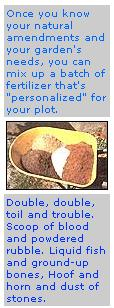

Issue # 114 - November/December 1988
Greensand? Colloidal phosphate? Kelp meal? Natural soil amendments may sound like the stuff of alchemy, but they can work wonders in your garden.
Furthermore, the proper use of natural soil amendments can seem pretty mysterious. Most gardeners are familiar with compost, but each time a neighbor sees my husband, Franklin, and me with a sack of greensand or hoof and horn meal in tow, we have to explain what that powder is and what it's for. Natural soil amendments are used for correcting specific major or minor nutrient deficiencies in your plot. They are not replacements for compost (which adds and feeds microbial life, increases nutrient availability and improves soil texture, balance and drainage-as well as adding nutrients).
In fact, a good composting and cover-cropping program, which recycles all unused plant material, can probably-unaided-maintain the fertility of an established, productive organic garden. But unless you've been gardening in one location for a long time with consistently good results, chances are your soil could use a little nutritional shot in the arm. Maybe you're using a new spot that's currently low on compost or in transition to organic methods. Perhaps your soil has a minor, long-term deficiency you've never addressed. In such instances, proper use of natural amendments can boost growing success.
"I called so many soil
experts the phone company thought someone had run up my bill!"
But how can you tell for sure if you need soil amendments? How much fertilizer constitutes "proper use"? How often should you use them? To get the answers to these and other questions, I consulted several gardening experts: Steve Rioch of Timberleaf Farm (he runs a soil-testing service and does related research); John Jeavons (the director of Ecology Action, a research center for bio-intensive techniques, and author of the classic guide HowTo Grow More Vegetables ); Robert Parness (of Woods End Laboratory and author of the very thorough text Organic and Inorganic Fertilizers ); and White Eagle "Otto" Wylie (a former soil tester who now manages an organic farm and biodome).
And what enlightening conclusions did I come away with after tapping these soilcentered minds? First, I found out rather quickly that you can ask such experts all the simple questions you want, but you'll never (and I mean never) get simple answers. In fact, I spent so much time on the phone listening to in-depth explanations that the phone company sent me a nice letter suggest ing that I check to see if someone else wasn't using my line and running up my bill! The discovery that soil fertility is a complex subject did convince me of one thing: A soiltesting service that specializes in making recommendations to organic growers is the way to go. All my experts agreed wholeheartedly.
"If a person is looking for a `one size fits all' prescription for a garden but doesn't want to bother with a good soil test, the only thing my conscience would let me recommend is adding compost," says Steve Rioch. Remember, though, that nutrientpoor soil produces nutrient-poor compost, and if you try to enrich a plot with materials grown on that plot, you'll still end up with the same deficiencies. The moral, then, is if you want to know how to best improve your soil's fertility, get a good soil test. My experts suggest using organically minded soil testers. If, instead, you get a state extension test or use a hometesting kit, the recommendations will be for specific doses of chemical fertilizers.
You can use the information that follows to convert those recommendations to natural amendments, and that trick may work out just fine. But it does carry some risk-and for a surprising reason. While underestimating how much of a nutrient you need has obvious drawbacks, excessive applications of a supplement are more harmful. In fact, the imbalances they cause can take years to correct. (Even an expert like John Jeavons, for instance, no longer tests his own soil but gets it professionally analyzed.)
I was a bit surprised when I learned about the risk of "overdosing" a garden. I suppose I was a victim of the common mindset that if a little bit of something is good, more of it must surely be better. I remember the first time I used natural amendments. I started out with a light application of those fine powders, but that dusting didn't look as if I'd put on much of anything (especially since I was used to spading on gobs of compost). So I began spreading the supplements freely-and didn't realize how excessive I was being until after I emptied the bags and then checked their labels. I had covered a few hundred square feet with fertilizer that was meant for an area four times as large.
I have two last words of advice (boiled down from my hours of phone calls): The experts I talked with all agree that within one to five years of adding the proper amendments, a soil should have good nutrient balance. Still, they say, it's a good idea to retest every five years or so. And they all shouted unanimously, "Never stop adding compost!" When humus levels drop in the soil (because you fail to keep boosting organic content), beneficial microbes die of. And those little critters are vital for breaking matter down into nutrients that plants can use and for enhancing soil structure in general.
What's What Among Amendments Here's a get-acquainted tour of the common natural amendments. Please note that the application rates mentioned are the maximum amounts to apply in any given year-a complete soil analysis will provide your best application guidelines.
Nitrogen (N) Sources:
• Hoof and horn meal (14% N, 2% P, 0% K). This odorous amendment is just what it says, a slaughterhouse by-product of ground hooves and horns. It starts releasing in 4-6 weeks and lasts 12 months. Use up to 4 lb./100 sq. ft.
• Blood meal (12.5% N, 1.3% P, 0.7% K). Dried blood (again from slaughterhouses) is a rich source of quick-acting nitrogen. But it's expensive, so most gardeners use it only on small plots. Blood meal is also an excellent nitrogen source for the compost pile if you have little access to manures, green matter or other nitrogen sources. Use sparingly (no more than 3 lb./100 sq. ft.)-it can burn plants. Blood meal lasts up to 4 months and is reputed to repel deer and rabbits.
• Fish meal (10.5% N, 6% P, 0% K). Fish meal, made from dried fish-processing wastes, contains a good supply of trace minerals. Use 5 lb./100 sq. ft. Lasts 6-8 months. • Leather meal or leather dust (5.5-12% N, 0% P, 0% K). This dried leather-tankage product is one of the more suspect natural amendments, due to the chemicals used in its processing. (Some sources are cleaner than others.) Use up to 2 lb./100 sq. ft. Lasts 12 months. • Soybean meal (6% N, 2% P, 2% K). Soybean meal is a natural by-product of soybean oil processing. Use 5 lb./100 sq. ft. Lasts 3-5 months depending on the grind. • Cottonseed meal (3-6% N, 2% P, 1-2% K). Made from cleaned cottonseed that has been freed of oils, this nitrogen source has recently fallen into disfavor with some organic growers. Not only does it naturally acidify the soil, but it may contain high amounts of pesticide residues. (Some distributors claim their product is from a minimally sprayed source.) Use up to 101b./100 sq. ft. Lasts 4-6 months.
Phosphorus (P) Sources: • Bone meal (3% N, 20% P, 0% K and 20-30% calcium). Farmers used to save and grind bones after butchering, but slaughterhouses do that job today. This excellent source of quick phosphorus (though somewhat expensive for large gardens) comes raw or, more commonly, steamed and powdered. Use up to 5 lb./100 sq. ft. Lasts 12 months or longer. • Rock phosphate or phosphate rock (0% N, 33% P, 0% K, plus 30% calcium and many trace minerals). Mined in Florida, Tennessee and the western U.S., this is a very slowreleasing amendment. Some growers swear by it for long-term slow release (often using it in conjunction with quickeracting colloidal phosphate). Some others don't want to wait for it to take effect. Use up to 10 lb./100 sq. ft. Lasts up to 10 years. • Colloidal or soft rock phosphate: (0% N, 1820% P, 0% K, plus 20% calcium and many trace minerals). This fine sediment results from the hydraulic mining of phosphate rock but is quicker-acting than the straight stone. Use up to 10 Ib./100 sq. ft. Lasts 2-3 years.
Potash (K) or Potassium Sources: • Greensand or glauconite (0% N,1.5% P, 6-7% K, plus 50% silica, 18-23% iron oxide and 22 trace minerals). This mined sea deposit has a pleasant odor and is hefty enough not to easily get wind-blown when broadcast. The greener it is, the more potassium it contains. Use up to 10 lb./100 sq. ft. Lasts up to 10 years. • Granite meal or dust, or crushed granite (0% N, 0% P, 3-5% K, plus 67% silica and trace minerals). Literally, pulverized granite rock. Though some growers criticize granite meal as being too slow-releasing, others praise it (and greensand) for its gentle breakdown rate and high silica content (silica plays an important role in overall soil fertility).
Use up to 20 lb./100 sq. ft. Lasts up to 10 years. • Kelp meal and liquid seaweed (1% N, 0% P,1.2% K, plus up to 33% trace minerals). This ocean-based K source is rich in trace minerals and natural growth hormones. As the seas have become more polluted, though, some growers have expressed concern about using kelp for more than 1 or 2 years. Apply sparingly-no more than 1 lb./100 sq.ft. per year (dilute liquid seaweed to labeled specifications). Lasts 6-12 months. • Wood ashes in general (0% N, 0% P, 1-10% K, though amounts are highly variable). Wood ashes (hardwood are best) raise soil pH as well as adding potash. Protect winter ashes from rain leaching. Use up to 2 lb./100 sq. ft. Lasts 12 months and longer.
pH and More:•
Lime. Whenever I asked a question about lime (crushed limestone), the answer was sure to be much more than I bargained for. Conventional wisdom holds that lime is what you add when you need to raise pH-the measure of potential hydrogen ions that determines a soil's sweetness (alkalinity) or sourness (acidity). But it turns out there just isn't a simple, all-purpose pH-boosting lime. First, there's dolomitic lime (also called highmagnesium lime), which has about 20% magnesium and is used where the soil needs magnesium as well as calcium. Then there's hi-cal lime (also called calcitic lime or calcite), which has only about 5% magnesium and is recommended where there are already adequate or excessive magnesium levels.
(Oyster shell lime is a good substitute if hi-cal lime is not available.) What's all this stuff about magnesium and calcium got to do with pH? Well, the very simplified explanation seems to be that "good" pH is more than just a number on a litmus scale, but entails a proper balance of potassium, magnesium, calcium and sodium. Here again, a good soil test will help you properly address the situation.
• Gypsum, also called land plaster or calcium sulfate (23-57% calcium, 17.7% sulfur). This natural, mined source of calcium and sulfur is used where magnesium needs to be reduced and calcium added, but where pH levels are already adequate or even too high. Use only as indicated by a soil test, from 110 lb./100 sq. ft. Do not use dry wall as a source of gypsum. It contains other chemicals and contaminants.
• Clodbuster or Leonardite (approximately 15% humic materials, 15% humic acid). These crushed deposits of ancient plant and animal remains (from New Mexico) are a source of concentrated humates and humic acids that help make nutrients available to plants (compost also provides these goodies). Apply in the fall or at least a month before compost is added. Lasts 12 months.
• Fish emulsion (4% N, 4% P,1% K). Use this concentrated liquid fisheries waste product to give a nutrient boost to seedlings after their true leaves appear. It's also used as a foliar feed spray in the garden.
• Sul-Po-Mag (22% potash, 18% magnesium, 22% sulfur). The mined mineral lang- beinite. Sul-Po-Mag is generally used where calcium is plentiful but magnesium and potash are deficient.
• Fertilizer blends. Some companies offer personally designed blends made from rock powders, compost, tankages and other natural waste products. Erth-Rite "C" and Fertrell Blue Label are just two examples. Be sure you need what any such blend is offer ing before applying.
Grow Power With Grow Powder Natural amendments do sound a little strange. But then, the Pilgrims most likely had a few initial laughs at the thought of burying fish in corn hills. And no doubt they quickly changed their tune after filling their hungry bellies with the products of the Indians' simple alchemy-dead fish converted to kernels of edible gold.
NATURAL AMENDMENTS:WHY?
WHY NOT USE SYNTHETIC FERTILIZ ers to boost and balance soil nutrient deficiencies? Aren't they less expensive than natural amendments and just as effective? (Phosphorus is phosphorus, after all?) Besides, they're easy to buy (even department stores carry them) and apply-all premixed and premeasured. So why go to the muss and fuss of using natural soil additives?
Proponents of natural amendments offer several arguments. First is the matter of soil health. Synthetic supplements sometimes give gardeners the impression that those additives provide everything the soil needs. But adding synthetics without also incorporating organic matter by composting and covercropping (steps natural fertilizer proponents repeatedly emphasize) is a big mistake.
What happens? The soil microbes get a sudden flush of fertilizer. They need the energy in the soil's organic matter to utilize those soluble nutrients, and they take it-in huge quantities. Thus, organic matter actually gets destroyed. As this continues over time, the soil becomes progressively more lifeless. And the less organic matter a soil has, the more fertilizer will be required to do the same job. As an added kicker, nutrients then get more quickly leached away. This causes waste in terms of product, time and money-plus creating potential run-off problems.
Economically speaking, because synthetics are more easily leached from the soil and must be reapplied each year, their initial costper-bag advantage fades over time: Natural amendments release slowly and gently over a longer period of time and-if a gardener recycles refuse and cover crops-do not need to be applied yearly.
Since synthetics are made from and with the aid of petroleum and natural gas, their cost is also doomed to rise as prices for fossil fuels escalate. (Robert Parness notes in Organic and Inorganic Fertilizers that Mobil Oil Corporation once ran an advertisement claiming that, with conventional farming practices, it takes the energy equivalent of a gallon of gasoline to produce either a pound of hamburger, a bushel of corn or five loaves of bread.)
Another consideration is that chemical fertilizers make plants more susceptible to insect pests than do natural supplements. Recent experiments at Cornell University found less harmful insects on collards fertilized with manure than on those fertilized with synthetics. (Completely unfertilized collards, however, had the worst infestations.)
Then there are the subjective arguments: Many growers feel that a naturally fertilized tomato tastes better than a chemically boosted N-P-K one. They often argue that it's better for you, too. (Although some research results have backed this claim-Rodale researchers, for example, found that manurefed spinach had one quarter the potentially harmful nitrates as spinach fertilized with ammonium nitrate-the data is not conclusive.)
Perhaps my own greatest concern is that synthetics foster a "quick-cure" mindset. If they're the complete answer for fertilization, why aren't pesticides and herbicides also the panaceas for bugs and weeds? Such easy "answers" short-circuit curiosity. They numb our desire to learn from what goes on in our gardens-to find for ourselves the whys behind successes and failures. And that's unfortunate. Learning those whys, the webs of interaction, can help us find our own answers, grow more productively and become, ourselves, parts of our living gardens.
|
|
 |
|